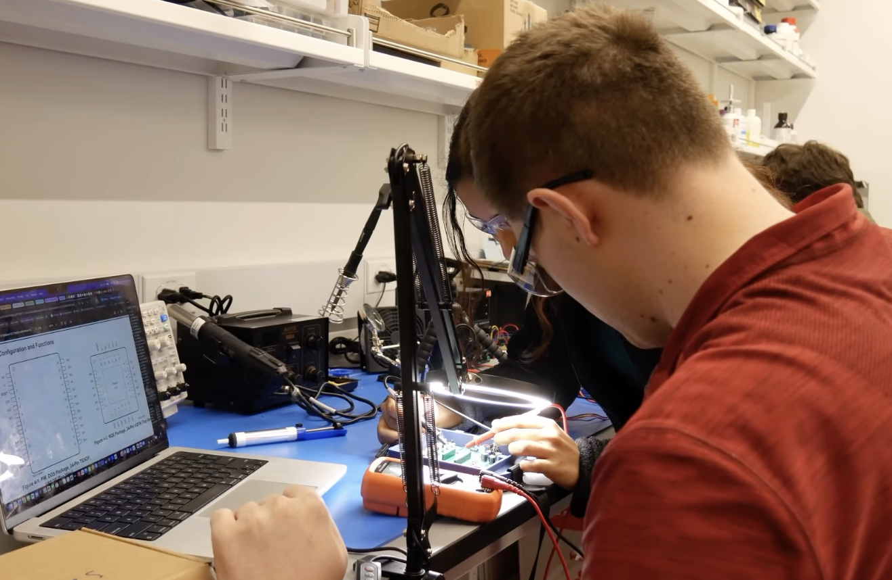

You can view or download my full resume below.
Resume/CV PDFWork Experience
Ithaca, NY; September 2025 - Present
As a member of the DEBUT at Cornell student project team, I contributed to the Arm Torque Tracker both as the Electrical Subteam Lead and an R&D Analyst. During my time with DEBUT, I helped design circuit diagrams and pin mapping schematics for various electrical components used for inertial and sEMG data collection, contibuted to circuity assembly and wiring after mappings seemed satisfactory, and compiled status updates and findings into offical design reports for access by future members of the team for other biomedical device projects.
Outside the lab, I also was a productive member of the team both in the experimentation and devlopment phases of our device. In addition to my work in the lab, I also assisted in the conduction of experimental field data collection and also provided contact information to those involved with outreach such that the team could get local subject matter experts involved and gain valuable feedback (both in Cornell's Motion Capture Studio and through real-world analysis with Cornell Men's Baseball team).
Other obligations for the DEBUT team in general included me meeting biweekly and collaborated with team members biweekly in both full-team and sub-team meetings to track progress, gathering feedback and coordinating next steps with team leads, presenting project milestones to faculty advisors and full-team leads, and provided cross-team support as needed to mechanical, software, and business teams.
Denver, CO; September 2025 - January 2026
As a Growth and Innovation Engineering Intern at SSR Mining, I was tasked with various assignments as per my scope of work outlined before my first day on the job. The conclusion of my internship culminated in the innovation of a new interactive drilling data dashboard (which can be in the "Projects" tab in the Navigation Bar), but during my time at SSR I primarily worked with data accuracy, safe storage, and backup. Using SQL and Lua scripts, I worked closely with the Mineral Extraction and Innovation teams to ensure incoming data to the corporate databases from the local ones at the numerous mine sites were correct, made with audit trails in case of future corrections, and run on cron jobs that automatically pulled the data at various intervals for automated company use. I also had the incredible opportunity to visit one of the facilities in Cripple Creek, Colorado, to see how the processes and practices I had learned about in action.
Throughout my time as an intern at SSR Mining, I also worked closely and met regularly with the Mineral Extraction and Innovation teams through numerous daily meetings in a collaborative environment to both discuss best practices and focus on maximizing value in ore extraction and processing.
Following the internship, I was invited back to do some part-time work as an independent contractor, where I organized and categorized the meaningful company data to include in the company's newest iteration of the Technical Data Center. During this time I met regularly with my mentors from the Innovation teams, and put my findings into an Excel sheet for general company use.
Highlands Ranch, CO; September 2025 - Present
As a laboratory technician at Oral Surgery of the Rockies, I was primarily in charge of maintaining the facilities, ensuring medical supplies were ample and available at all times for doctors and staff, and sterilizing rooms and equipment for upcoming patient surgeries. Aside from my steriliziation duties, I also assisted staff by preparing patient trays and other medical equipment needed during procedures, took inventory of medical supplies at nurse stations and patient rooms, and ensured the medical closet and crash carts were always fully stocked with various medical kits needed in case of emergencies. Additionally, I labelled syringes for upcoming surgeries, assembled patient folders and medical bags for both preoperative and postoperative measures, and oversaw the proper use and administration of numerous medical gasses.


Technical Strengths
Coding Languages: Python, C, Verilog, SQL, Lua
Software Programs/Tools: Arduino IDE, MCUXpresso, KiCad, LTSpice, Quartus
ECE Skills: PCB and Hardware Design, Ciruit Pin Mapping, Chip Analysis, Soldering, Programming, Debugging

Extracurriculars
Outside of formal coursework, I have been involved in activities that have helped me grow as both an engineer and a teammate. These experiences have strengthened my leadership, communication, and collaboration skills while giving me opportunities to work alongside others toward shared goals.
I value extracurricular experiences because they help develop the broader perspective and discipline needed to succeed in technical environments, both inside and outside the classroom.

Relevant Courses
Introduction to Circuits (ECE 2100), Introduction to Microelectronics (ECE 3150), Data Science (ECE 2720),
Digital Logic and Computer Organization (ECE 2300), Physiology of Human Health and Disease (BME 2010),
Computer Architecture (ECE 4750), Signals and Systems (ECE 3250), Physics: Electromagnetism (PHYS 2213),
Physics: Waves, Oscillations, and Quantum Physics (PHYS 2214), Linear Algebra (MATH 2940)